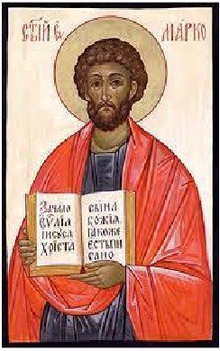

The first Gospel is written - Jesus is portrayed as the misunderstood prophet (Adoptionism). In Codex Sinaiticus and Codex Vaticanus the gospel actually ends at 16:8, as noted by Eusebius and Jerome, though Irenaeus (200 CE) cites verse 19, demonstrating that the early Church Fathers probably made the addition in order to harmonize Mark with the other gospels.

Mark 16:8 ‘And they went out quickly, and fled from the sepulchre; for they trembled and were amazed: neither said they any thing to any man; for they were afraid.’
0065 Sources of Gospel stories: The Gospels are written by those inspired by the Holy Spirit (i.e., IMAGINATION!). For example, when they read in Micah that the Messiah rose out of Egypt, of course the Spirit makes them think it must be Jesus who rose out of Egypt, so Matt 2:13 puts him in Egypt.
Often gospel stories mirror those of the pagan faiths around them. For example, the immaculate conception of Plato, whose mother Perictione was impregnated by Apollo, who declared to Ariston, to whom she was betrothed, the parentage of the child; the story of an evil serpent sent to ruin paradise was taught to the Jews by the Babylonians during the Captivity; also, the ideas of resurrection, the immortality of the soul, and dualism were taught not by Jews, but by Persians and incorporated into the Judaeo-Christian mythology during the Persian period of occupation.
~~~~~~~~